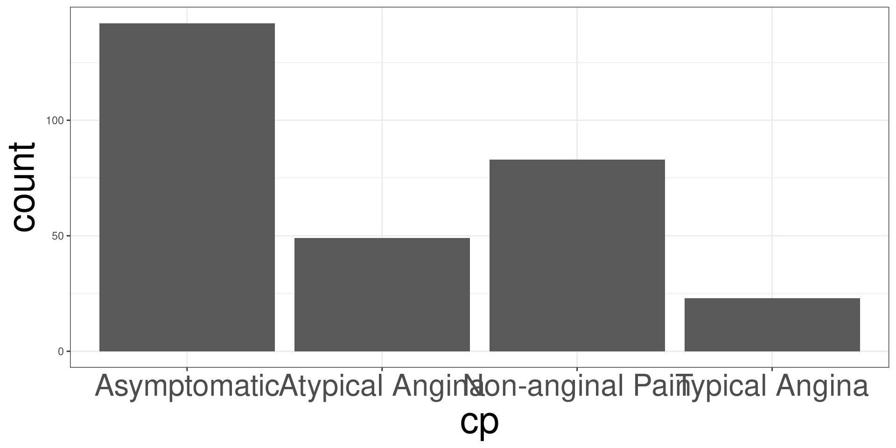
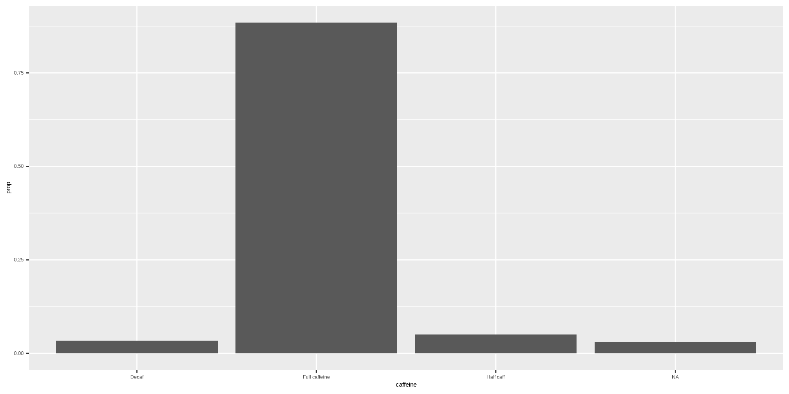

Categorical Data
R Packages
- csucistats
- tidyverse
The Great American Coffee Taste Test
The Great American Coffee Taste Test
Categorical Data
Continguency Tables
Bar Plots
Cross-Tabulation
Pie Charts
Theming
Background
In October 2023, James Hoffman and Cometeer held the “Great American Coffee Taste Test” on YouTube, asking viewers to fill out a survey and coffee ordered from Cometeer.
Data
The data is part of DSLC Tidy Tuesday program where data sets are provided to help data science learners how to create graphics.
Information on the data sets variables (columns) can be found here.
Data
Categorical Data
The Great American Coffee Taste Test
Categorical Data
Continguency Tables
Bar Plots
Cross-Tabulation
Pie Charts
Theming
Categorical Data
Categorical data are data recordings that represented a category.
Data may be recorded as a “character” or “string” data.
Data may be recorded as a whole number, with an attached code book indicating the categories each number belongs to.
Examples of Categorical Data
Are you a student?
What city do you live in?
What is your major?
Likert Scale
Likert scales are the rating systems you may have answered in surveys.
- Strongly Disagree
- Disagree
- Neutral
- Agree
- Strongly Agree
Likert Scales
Likert scales may be treated as numerical data if the jumps between scales are equal.
Summarizing Categorical Data
Once we have the data, how do we summarize it to other people.
Continguency Tables
The Great American Coffee Taste Test
Categorical Data
Continguency Tables
Bar Plots
Cross-Tabulation
Pie Charts
Theming
Continguency Tables
Continguency tables display how often a category is seen in the data.
There are two types of statistics that are reported in a table, the frequency and proportion.
Frequencey
Frequency represents the count of observing a specific category in your sample.
#> [1] NA "2" "3" "2" "1" "3" "2" "2" "4" "2"Proportions (relative frequencey)
Proportions represent the percentage that the category represents the sample.
This allows you to generalize your sample to the population, regardless of sample size.
Continguency Tables in R
The variable caffeine indicates how much caffeine a participant prefers.
Bar Plots
The Great American Coffee Taste Test
Categorical Data
Continguency Tables
Bar Plots
Cross-Tabulation
Pie Charts
Theming
Plotting in R
Plotting in R can be done via the ggplot2, a powerful library based on the Grammar of Graphics.
Plotting in R
- You need to create a base plot using the
ggplot() - Use the
+to change the look of the base plot - Indicate how to transform the base plot to the desired plot
geom_*stat_*- Change the look of the plot with other functions
- Use a
theme_*function to add a theme to the plot
Bar Plots
Bar Plots can be used to display the frequency or proportions on the data.
Frequency Bar Plots in R
Frequency Bar Plots in R

Relative Frequency Bar Plots in R
Relative Frequency Bar Plots in R
Cross-Tabulation
The Great American Coffee Taste Test
Categorical Data
Continguency Tables
Bar Plots
Cross-Tabulation
Pie Charts
Theming
Data
The variable taste indicates if the participants like the taste of coffee.
Cross-Tabulation
Cross-tabulations, also known as contingency tables, are statistical tools used to analyze the relationship between two or more categorical variables by displaying their frequency distribution in a table format. Each cell in the table represents the count or frequency of observations that fall into a particular combination of categories for the variables.
Key Features of Cross-Tabulations
- Rows and Columns:
- Rows represent the categories of one variable.
- Columns represent the categories of another variable.
- Cells:
- Each cell displays the frequency or count of data points that belong to the intersection of a row and column category.
- Margins:
- Row and column totals provide summaries for each variable.
- The grand total shows the overall sample size.
Types of Proportions in Cross-Tabulations
- Row Proportions: Show the percentage of each row total represented by a cell.
- Column Proportions: Show the percentage of each column total represented by a cell.
- Table Proportions: Show the percentage of the overall total represented by a cell.
Table Proportions
Table proportions in cross-tabulations refer to the relative frequency or percentage of counts within the entire table, calculated by dividing each cell’s count by the total sum of all counts in the table. These proportions allow you to examine the contribution of each cell to the overall data set.
Table Proportions
Row Proportions
Row proportions refer to the relative frequency or percentage of counts within each row of a contingency table. In a cross-tabulation, row proportions allow you to compare how the distribution of one variable varies within each category of another variable, within a row.
Row Proportions
Column Proportions
Column proportions refer to the relative frequency or percentage of counts within each column of a contingency table. These proportions allow you to compare how the distribution of one variable varies across different categories of another variable, within a column.
Column Proportions
Stacked Bar Plot in R
Stacked Bar Plot in R

Stacked Bar Plot in R

Pie Charts
The Great American Coffee Taste Test
Categorical Data
Continguency Tables
Bar Plots
Cross-Tabulation
Pie Charts
Theming
Pie Charts
A pie chart is a circular statistical graphic divided into slices, where each slice represents a proportion or percentage of the whole. The size of each slice is proportional to the relative frequency or magnitude of the category it represents.
Pie Charts

Key Features of Pie Charts
- Circular Format:
- The chart is shaped like a circle, symbolizing a whole (100% or 1).
- Slices:
- Each slice corresponds to a category and its size represents the contribution of that category to the total.
- Labels:
- Slices are often labeled with the category name and the percentage or value they represent.
Pie Chart in R
Pie Chart in R
Theming
The Great American Coffee Taste Test
Categorical Data
Continguency Tables
Bar Plots
Cross-Tabulation
Pie Charts
Theming
Themes
The R packages ThemePark and ggthemes allows you to change the overall look of a plot.
All you need to do is add the theme to the plot.
m201.inqs.info/lectures/2